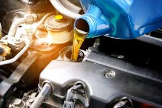

O que está incluso?
- Troca completa do óleo do motor
- Substituição do filtro de óleo
- Troca do filtro de ar (se necessário)
- Verificação do nível dos fluidos
- Inspeção visual de vazamentos
Importância da troca de óleo
O óleo lubrifica, resfria e protege o motor contra o desgaste. A troca periódica evita danos internos, perda de desempenho e aumento no consumo de combustível.
Quando trocar?
Recomendamos a troca de óleo a cada 5.000 a 10.000 km, conforme o tipo de óleo e uso do veículo. Siga sempre o manual do fabricante ou consulte nossa equipe técnica.
Não é esse o problema?
se esse nâo for o seu problema voçe pode ver todos os nossos serviços em: serviços oferecidos.|  |
 |